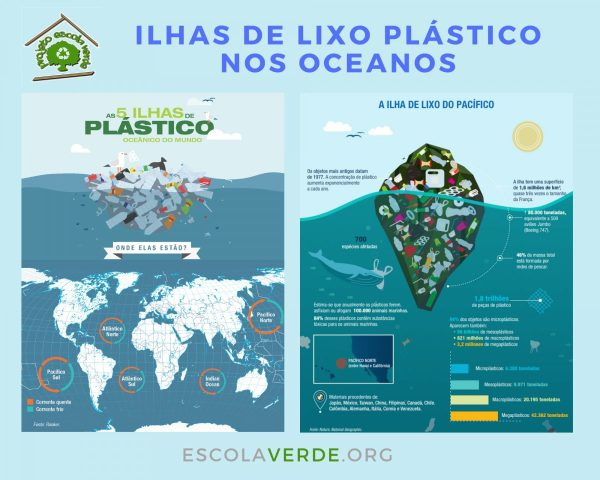

Minimizar o consumo de plásticos é muito mais simples do que parece. A seguir, propomos vários conselhos que podem mudar sua vida e a do planeta:
Os plásticos de um só uso, como pratos e talheres fabricados com esse material, tornam a nossa vida mais fácil, mas prejudicam gravemente o planeta. Este tipo de produto tem alternativas viáveis e é imperativo optar por elas.
Vamos ao supermercado pelo menos uma vez por semana para abastecer a geladeira. Se usarmos sacolas reutilizáveis cada vez que formos fazer compras (tecido, malha ou vime), a saúde do nosso planeta melhorará. A partir de agora não esqueça da sua antes de sair de casa.
A maioria dos chicletes comercializados atualmente inclui plástico na sua composição. Tente reduzir seu consumo e ponha-os no lixo adequado para serem reciclados. Você também pode optar por chicletes naturais e ecológicos.
Os recipientes descartáveis inundam os supermercados (bandejas de poliestireno, garrafas PET, tetra paks, embalagens de plástico, etc.). Porém, há uma alternativa: cada vez mais estabelecimentos oferecem a possibilidade de comprar a granel.
Se você almoça no trabalho, o tupperware faz parte do seu dia. Propomos que mude sua rotina e prefira recipientes de vidro ou aço inoxidável. Além do planeta ficar agradecido, a sua saúde também o fará porque alguns destes objetos podem soltar substâncias nocivas.
Até as menores ações podem ter um grande impacto positivo no nosso planeta. Por exemplo, algo tão rotineiro como estender a roupa pode se tornar um ato extraordinário se trocarmos os prendedores de plástico pelos de madeira.
Se além de reduzir seu consumo de plásticos, você conseguir, com seu exemplo, que sua família, amigos e companheiros de trabalho também o façam, o impacto de suas ações pelo bem do planeta aumentará exponencialmente.
Às vezes, nosso ritmo de vida faz com que não prestemos atenção aos detalhes. Ao reciclar um resíduo plástico, este pode acabar na lixeira incorreta. Antes de colocar seus resíduos nas lixeiras, pare e pense qual é o lugar de cada um deles.
Atualmente o mercado oferece vários produtos alternativos sem plásticos e a oferta não para de crescer. Desde batons sem microplásticos ou escovas fabricadas com madeira até camisetas feitas com tecidos naturais.
Se você não teve outra escolha que comprar uma garrafa de plástico ou um pack de plástico no supermercado, reutilize-os em vez de convertê-los em resíduos. A garrafa pode ser reutilizada tantas vezes como você quiser e o pack pode servir para guardar outros alimentos.
Fonte: Greenpeace.**Fonte: Parlamento Europeu.***Fonte: Fórum Econômico Mundial.